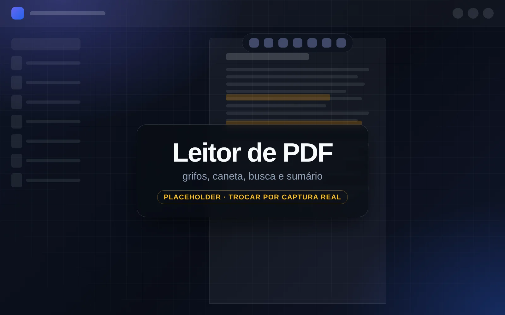
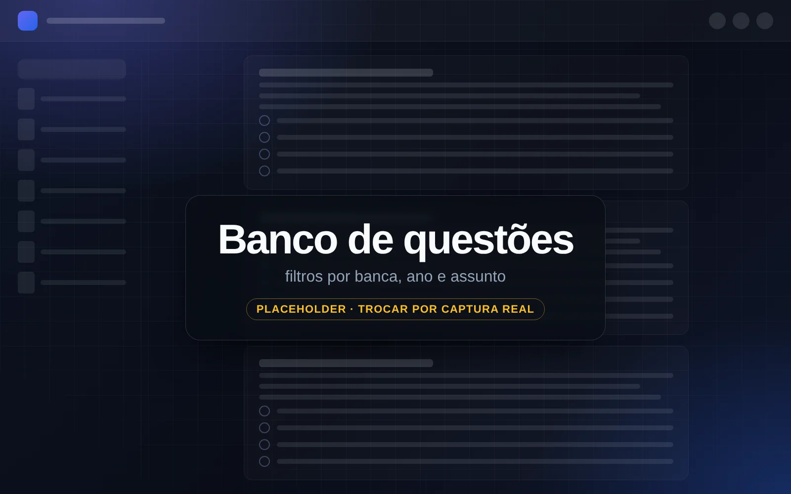

Para concursos, OAB e faculdade de Direito
Estude Direito direto no PDF
O JusPDF é um app para Android que junta leitor de PDF com grifos e caneta, banco de questões por assunto, Vade Mecum offline e IA opcional com a sua chave. Feito para estudar no tablet ou no celular.
- Grátis
- Sem cadastro
- Seus dados ficam no seu aparelho
- Android 7+

- ~10 MBde APK, leve até em tablets antigos
- Android 7.0+em tablets e celulares
- 5 provedores de IAGemini, DeepSeek, ChatGPT, Groq e OpenRouter
- Sem contanem servidor, nem anúncios
Recursos
Tudo o que você usa para estudar, num só app
Do PDF da apostila ao banco de questões e à lei seca: o JusPDF reúne as ferramentas do estudo jurídico e funciona sem internet para o essencial.
Leitor de PDF como o Acrobat
Grife, sublinhe e risque o texto, escreva com a caneta e o marca-texto, desenhe formas e use a borracha e as notas adesivas.
Busca, sumário e favoritos
Pesquise no documento com lista de resultados, navegue pelo sumário (do PDF ou montado a partir dos títulos), pelas miniaturas e pelos favoritos.
Modo noite e modo foco
Escureça o PDF para ler à noite, ajuste zoom, giro e layouts e use a tela cheia de foco para estudar sem distração.
Ouvir o material
Com o recurso Ouvir, o app lê o PDF em voz alta para você revisar sem ficar com os olhos na tela o tempo todo.
IA com a sua chave
Resumo, pontos críticos, questões sob demanda, “Simplificar”, “Explicar risco” e conversa sobre o material. Opcional e sem servidor no meio.
Banco de questões por assunto
Importe provas reais em PDF, gere questões e filtre por banca, ano, origem e assunto, na árvore Disciplina › grupo › tópico.
Vade Mecum offline
As principais leis baixadas do texto oficial do Planalto, com busca por artigo, mais busca online de leis e jurisprudência.
Pastas, metas e tempo de leitura
Organize os PDFs em pastas, acompanhe o tempo de leitura e a meta diária, importe só um intervalo de páginas e exporte uma cópia com as suas anotações.
Leitor de PDF
Leia, grife e desenhe direto na página
Nada de exportar nem copiar o texto para outro lugar: as anotações ficam sobre o próprio PDF e você ainda pode exportar uma cópia com elas.
Inteligência artificial
IA com a sua chave: resumo, pontos críticos e questões
A IA é opcional. Você cola a chave de um provedor no app e usa a IA sobre o seu material, sem conta no JusPDF e sem servidor no meio: o texto vai direto do aparelho ao provedor que você escolheu.
- Resumo do PDF ou de um trecho.
- Pontos críticos que costumam ser cobrados em prova.
- Questões sob demanda a partir de uma página, de uma matéria (seção) ou de um intervalo de páginas.
- Simplificar um trecho difícil e Explicar risco do que pode cair.
- Conversa livre sobre o material que você está lendo.
A IA pode errar. Use-a como apoio e confira sempre com a lei e com o seu material.
Seu aparelho
O PDF, a sua chave e as respostas ficam aqui. Só o trecho que você pedir é enviado.
direto, sem servidor do JusPDF
IA principal, à sua escolha
Você define qual provedor é perguntado primeiro.
- Google Gemini
- DeepSeek
- ChatGPT
- Groq
- OpenRouter
se a principal falhar
Backups automáticos
O app tenta as outras IAs que você configurou, sem você precisar fazer nada. O Google Gemini tem plano gratuito.

Filtrar por assunto
- Direito Penal
- Parte Geral
- Erro de tipo
- Parte Geral
Banco de questões
Banco de questões por assunto, do seu jeito
Monte o seu caderno de treino com provas reais que você importa e com questões geradas a partir do seu material, e estude um assunto de cada vez.
- Importe provas reais em PDF. O app separa as questões do gabarito e reconhece banca, ano, órgão e disciplina.
- Filtre por banca, ano, origem e por assunto, numa árvore Disciplina › grupo › tópico, como Direito Penal › Parte Geral › Erro de tipo.
- Gere questões com IA de uma página, de uma matéria ou de um intervalo de páginas, sempre separadas das de provas reais.
- Acompanhe o desempenho com estatísticas e meta diária.
Vade Mecum e jurisprudência
Vade Mecum offline e busca de jurisprudência
As principais leis ficam no aparelho, baixadas do texto oficial do Planalto, e podem ser consultadas sem internet. Para o resto, o app busca online e guarda só o que você escolher.
- CFConstituição Federal
- CPCódigo Penal
- CPPCódigo de Processo Penal
- CCCódigo Civil
- CPCCódigo de Processo Civil
- CLTConsolidação das Leis do Trabalho
- CDCCódigo de Defesa do Consumidor
- CTNCódigo Tributário Nacional
- LEPLei de Execução Penal
- ECAEstatuto da Criança e do Adolescente
- 8.112Lei 8.112 (servidores federais)
- 14.133Lei 14.133 (licitações e contratos)
- Busca de artigos nas leis que estão no aparelho.
- Busca online de leis no Planalto, no Senado e na Câmara, salvando só a que interessa.
- Jurisprudência do STF, do TST e do TJDFT.
“O erro sobre elemento constitutivo do tipo legal de crime exclui o dolo, mas permite a punição por crime culposo, se previsto em lei.”
Privacidade
Privacidade de verdade: seus estudos ficam com você
Não existe conta, login nem servidor do JusPDF. O app não tem anúncios nem rastreamento, e a leitura funciona sem internet.
Fica só no seu aparelho
- Seus PDFs, grifos, desenhos e notas
- Questões, respostas, estatísticas e meta diária
- As leis baixadas para o Vade Mecum
- As chaves das IAs que você configurou
Só sai quando você pede
- O trecho de texto que você manda para a IA, direto ao provedor escolhido
- As buscas de leis e jurisprudência (Planalto, Senado, Câmara, STF, TST e TJDFT)
- A consulta de atualizações ao repositório público de versões no GitHub
O app nunca envia seus PDFs
Seus arquivos não saem do aparelho. Para apagar tudo, basta desinstalar o app. O backup, se você fizer um, é um arquivo seu e inclui as chaves de API em texto simples: guarde-o com cuidado.
Instalação
Como instalar o JusPDF em 3 passos
O JusPDF não está na Play Store: você instala a partir de um arquivo APK. Leva um minuto e o ajuste do Android é feito uma única vez.
Baixe o APK
Toque no botão e baixe o JusPDF.apk, de cerca de 10 MB. O arquivo é sempre a versão mais recente.
Baixar o APKPermita a instalação
Ao abrir o arquivo, o Android pode pedir permissão para instalar apps de fora da loja. Autorize o navegador (ou o gerenciador de arquivos) que você usou para baixar. É só na primeira vez.
Abra e estude
Abra o JusPDF, adicione os seus PDFs e comece a grifar. Depois disso, as atualizações são instaladas com um toque, dentro do próprio app.
Quer conferir o arquivo? (opcional)
Compare o SHA-256 do JusPDF.apk baixado com o código publicado da versão atual. Requer Android 7.0 ou superior.
Compilação · SHA-256
O código SHA-256 da versão atual está publicado no arquivo version.json (campo apkSha256).
Perguntas frequentes
Perguntas frequentes sobre o JusPDF
Respostas diretas, inclusive sobre o que o app ainda não faz.
Preciso de internet para usar o JusPDF?
Não para o essencial. Ler PDFs, grifar, desenhar, resolver questões e consultar as leis já baixadas funciona sem internet. A conexão só é usada quando você pede a IA, busca leis e jurisprudência online, baixa leis para o Vade Mecum ou confere se há atualização.
O JusPDF é grátis?
Sim. O app é gratuito, sem anúncios e sem cadastro. A IA é opcional e usa a sua própria chave: o Google Gemini tem plano gratuito, e nos outros provedores valem as regras e os preços de cada um, que o JusPDF não controla.
Por que o JusPDF não está na Play Store?
O JusPDF é distribuído apenas como arquivo APK, direto deste site. Por isso, na primeira instalação o Android pede que você permita instalar apps de fora da loja para o navegador ou o gerenciador de arquivos que usou. Depois de instalado, as atualizações chegam com um toque, dentro do próprio app.
É seguro? Como verifico o arquivo (SHA-256)?
O JusPDF é um projeto pessoal e o APK é assinado com uma chave de depuração, não com uma chave de loja. Por isso o Android o trata como app de origem desconhecida. Baixe-o só por este site ou pela página de versões no GitHub e, se quiser ter certeza de que o arquivo é o publicado, compare o SHA-256, que aparece na seção “Como instalar” e no arquivo version.json. No computador, use sha256sum JusPDF.apk (Linux), shasum -a 256 JusPDF.apk (macOS) ou Get-FileHash JusPDF.apk (Windows PowerShell): o resultado deve ser idêntico.
Funciona no iPhone ou no navegador?
Não. O JusPDF é só para Android 7.0 ou superior, em tablets e celulares. Não existe versão para iPhone ou iPad e também não há versão publicada para usar no navegador.
Quais IAs posso usar? Preciso pagar?
Google Gemini (que tem plano gratuito), DeepSeek, ChatGPT, Groq e OpenRouter. Você cria a chave no site do provedor, cola no app e escolhe qual é a principal; as outras que você configurar entram como backup automático se a principal falhar. Qualquer custo é cobrado pelo próprio provedor. A IA é opcional: sem chave, o leitor, o banco de questões e o Vade Mecum continuam funcionando.
Meus PDFs vão para algum servidor?
Não. Não existe servidor do JusPDF: seus PDFs, anotações e respostas ficam no aparelho. A única coisa que sai é o trecho de texto que você pede para a IA analisar, enviado direto do aparelho ao provedor que você configurou. Os detalhes estão na política de privacidade.
As questões geradas pela IA são de provas reais?
Não. As questões geradas pela IA são criadas a partir do seu material e podem conter erros: não são questões de provas anteriores nem substituem o gabarito oficial. Para treinar com provas reais, importe o PDF da prova: o app separa as questões do gabarito e reconhece banca, ano, órgão e disciplina. Confira sempre com a lei e com o seu material.
O JusPDF tem OCR? E PDF escaneado?
Ainda não há OCR. PDFs escaneados (só imagem) abrem e aceitam desenho e anotações à mão, mas não têm busca nem recursos de IA, porque não há texto para o app ler. PDFs com texto selecionável funcionam por completo.
Como atualizo o app?
Depois de instalado, o app confere se há versão nova e a instala com um toque, dentro do próprio app. Se preferir, baixe o APK de novo por esta página: ele é sempre a versão mais recente e instala por cima da atual. Por garantia, faça um backup antes de atualizar manualmente.
Pronto para estudar direto no PDF?
Baixe o JusPDF, abra a sua apostila e grife a primeira página. Sem cadastro e sem pagar nada.